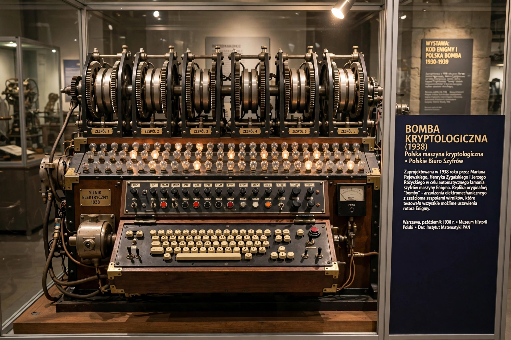

The bomba (Polish for "bomb"), or bomba kryptologiczna, was an electromechanical machine designed in 1938 by Polish cryptologist Marian Rejewski of the Cipher Bureau to break German Enigma ciphers.
| Bomba | |
|---|---|
 | |
| Inventor | Marian Rejewski |
| Year | 1938 |
| Purpose | Enigma key recovery |
Exploiting the Enigma's repeated message-key indicator, the bomba tested rotor positions using six Enigma rotor sets, stopping when a consistent position was found. Six bomby could find daily keys in about two hours.
Changes to German procedures in 1939 reduced its effectiveness. Polish methods were shared with Britain and France in July 1939 and inspired the British Bombe at Bletchley Park, notably developed by Alan Turing and Gordon Welchman.